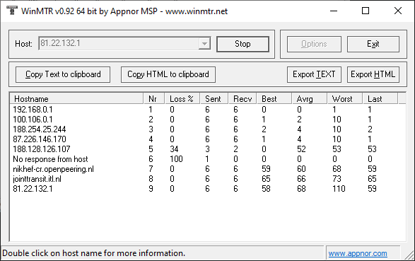

Блокируют на ТСПУ, и (возможно) на магистрали. Все адреса проходящие по своим базам как UA, маршрут или AS не учитывают.
На ТСПУ блокируют весь трафик (ICMP, TCP, UDP), сверяя только адрес назначения.
Учитывая, что почти все хостинг-провайдеры UA и так блокируют трафик из RU уже около года, то особо разницы и не заметят в RU 
А это не только про хостинг-провайдеры UA. Многие адреса иногда не связаны с UA, кроме как запись в ДБ, и у РКН может быть своя версия, ведомая только им. Например, уже заметили.
Ну я тоже условно про хостинг провайдеров, не только они.
По факту же, уже как год существует проблема связности с UA из-за блокировок со стороны самих провайдеров UA, если не провайдеры, так ЦОДы… Так что новость про ТСПУ меня, на самом деле, несколько удивила. Видимо, просто добить решили то, что коллеги со стороны UA еще не закрыли, иначе я не могу это объяснить.
Вполне вероятно, что это страна регистрации ip адреса.
В одном тематическом чате увидел обсуждение не рабочего сервера на ip из диапазона 81.22.132.0 - 81.22.132.255.
Участники чата прогнали его через ping-admin и получили вот такой результат: Telegram: Contact @protocol_vpn. Я перепроверил и у меня возникло такое впечатление, что из российских. дата-цкнтров указанный адрес пингуется, а вот из обычного интернета нет. Я вбил айпишник в Проверить IP адрес онлайн, информация по IP адресу, страна, город, провайдер и там показывается страна регистрации Украина, а упомянутый в том же чате IP and website location: Check host - online website monitoring ни какой Украины не определяет, а на сайте “serva one” написано только про Юнайтед Кингдом.
В базах RIPE адрес может иметь статус allocated или assigned. Но это, зачастую, не имеет отношения к географии использования адреса, если вы не пытаетесь заставить интернет ходить строем. В противном случае получаете чебурнет (не кванмён, не китайский сектор, а неведома зверушка).
у меня работает Настройка MikroTik DoH | DNS over HTTPS, защита трафика
xn----7sba7aachdbqfnhtigrl.xn--j1amh использует Cloudflare
Вместе с адресами блокируют сайты UA. Блокировка SNI на ТСПУ. Как минимум, по маске *.ua (т.e. включает .ua) . Адрес назначения любой.
нету маски, множество других .ua работают
В моих тестах есть.
google.com.ua?
Да и это SNI, но возможно часть адресов исключена для этого правила
у меня работает, рт сз. и вот еще например https://epicentrk.ua/ работает. По доменам выше (2ip.ua, pp.ua,…) у меня таймаут, а вот из реестра https://war.ukraine.ua/ приходит tcp reset
Значит не все сайты, по факту, блокируют, зависит от адреса. Но маска для блокировки SNI общая.
В globalcheck https://epicentrk.ua/ и https://google.com.ua недоступны через все сенсоры используемые для бесплатных тестов.
Блокируют, вероятно, как-то необычно, предположительно, на каких-то (каком-то?) магистральном провайдере, т.к. доступность у разных операторов разная.
Блокировка диапазонов ITLDC выдаёт разные результаты на разных провайдерах:
185.14.28.0/22
217.12.206.0/23
82.118.20.0/22
2a02:27ab::/32
2a00:1ca8::/32
Эти диапазоны используются в Нидерландском и Польском датацентрах. Из общего в 4 из 5 случаев только то, что в качестве ORG указана организация с адресом в Украине. При этом последний диапазон закреплён за Нидерландской компанией, и также недоступен у малой части операторов.
И дополнительно, действительно, блокируют SNI *.ua, уже, видимо, на «обычных» провайдерских ТСПУ.
Не понятно, на каком основании блокируют целые диапазоны дата-центров? И что делать людям, пострадавшим от очередных ковровых блокировок?
Разный результат может быть из-за разницы в обновлениях. В прежней точке уже не наблюдаю тех блокировок. Хоп был ТСПУшный (но возможно я что-то путаю).
Заметил, что блокировки по подсетям и *.ua сняли, Ростелеком.
{kind=link}
По трассировке дальше провайдера пакеты никуда не уходили, однако когда эти диапазоны перестали блокировать, трассировка вышла дальше на магистральные сети.

2ip.ua работает? у меня нет
У меня тоже 2ip.ua не работает. И WinMTR показывает как по первому скриншоту (дальше провайдера (ТТК Урал) запрос не идёт).
~ $ traceroute -I 81.22.132.1
traceroute to 81.22.132.1 (81.22.132.1), 30 hops max, 60 byte packets
1 192.168.0.1 (192.168.0.1) 15.107 ms 15.076 ms 15.071 ms
2 100.106.0.1 (100.106.0.1) 18.983 ms 19.005 ms 22.399 ms
3 * * *
4 * * *
5 * * *
6 * * *
7 * * *
8 * * *
9 * * *
10 * * *
11 * * *
12 * * *
13 * * *
14 * * *
15 * * *
16 * * *
17 * * *
18 * * *
19 * * *
20 * * *
21 * * *
22 * * *
23 * * *
24 * * *
25 * * *
26 * * *
27 * * *
28 * * *
29 * * *
30 * * *
Уже перестало работать на утро, блокировку вернули.
что это за айпи? ответ мне или нет?
Есть такое. На ТСПУ.
Блокировки входят, выходят и входят. Замечательно выходят!
Возможно блокировка пира из-за ошибок в его конфигурации. AS50673 анонсирует 192.168.6.0/24, например.
Разблокировали, остальные пока блокируются. Написал сообщения в NOC’и крупнейших провайдеров.
ITLDC NL Дата центр. Есть вероятность разблокировки в РФ?
Диапазон попал под блокировку 5.34.180.0 - 5.34.181.255
Страна NL The Netherlands / Нидерланды EU / Europe / Европа
Регион DR Drenthe / Дренте Timezone=Europe/Amsterdam
Город Meppel / Меппел 7941 (52.6958 6.1956)
Страна регистрации Ukraine / Украина
Организация ITL LLC
Континент Europe/Европа
WhoIs IP адреса
inetnum: 5.34.180.0 - 5.34.181.255
netname: ITL-DC2
remarks: Geofeed https://itldc.com/ipgeo.csv
descr: VDS and Dedicated subnet
descr: Dronten, Netherlands
remarks: INFRA-AW
remarks: *****************************************************************
remarks: In case of issues related with SPAM, Fraud, Phishing, DDoS,
remarks: portscans or others, feel free to contact us with relevant info
remarks: and we will shut down this server: abuse@layer6.net
remarks: *****************************************************************
country: NL
admin-c: LYR6-RIPE
tech-c: LYR6-RIPE
status: ASSIGNED PA
mnt-by: MNT-LAYER6
created: 2015-05-07T10:57:41Z
last-modified: 2021-03-20T19:03:31Z
source: RIPE
person: Layer6 NOC
address: Burgas 8000, p.o. box 201
address: Bulgaria
phone: +359 2 4925555
nic-hdl: LYR6-RIPE
mnt-by: MNT-LAYER6
created: 2015-11-17T13:25:53Z
last-modified: 2018-02-21T11:06:11Z
source: RIPE # Filtered
route: 5.34.180.0/23
descr: VDS/VPS route for SERVERIUS NL
origin: AS21100
mnt-by: ITL-MNT
created: 2015-05-07T11:00:04Z
last-modified: 2015-05-07T11:00:04Z
source: RIPE
Записи DNS A
185.14.28.0/22
3 декабря вечером я обратился в Билайн по поводу блокировки IP-адреса, входящий в этот диапазон. Ночью 4 декабря IP-адрес в данном диапазоне был доступен (успешное подключение к VPN-серверу NL15 сервиса ProstoVPN). Уже утром 4 декабря блокировка вернулась. На данный момент блокировку данного адреса наблюдаю у многих калужских провайдеров: Билайн домашний, МТС домашний, YOTA мобильный, Maxnet КФ МГТУ.
На данный момент я всё ещё не получил ответ от Билайн по поводу блокировки.
Извините за вмешательство. Можно пояснительную бригаду)
Каким образом делается вывод что блок на ТСПУ, а когда у магистрального провайдера?
Это особенность блокировок в РФ. ТСПУ установлены максимально близко к пользователю. Поскольку, в данном случае, заблочено все, включая ICMP, результат виден на любой трассировке и не требует расшифровки.
Обрыв трассировки в сетях провайдера, не считая аварий, означает блокировку на ТСПУ. Оно основной поставщих сбоев, поэтому все сомнения трактуются в пользу блокировок. Провайдеры РФ собирают деньги, чинят последнюю милю, но утратили контроль над своими сетями. Даже ЛК провайдера, как правило, фильтруется на ТСПУ.
На магистральных сетях тоже установлены ТСПУ (в т.ч. трансграничные), поэтому, строго говоря, cейчас все блокировки происходят на ТСПУ. Раньше встречались блокировки на пограничных маршрутизаторах. Но пользователь до них, как правило, не доходит, они скрыты блокировками провайдерских ТСПУ.
Т.е самостоятельно провайдер ничего не может блокировать?
Может, но у него нет обязанности это делать при наличии ТСПУ. Допустим, провайдер блокирует какие-то порты (внутри сети) или сайты для “безопасного” интернета (по отдельному тарифу), трассировку это не нарушит. При сетевых эпидемиях, самые отбитые, блокировали (не)известные адреса на пограничных маршрутизаторах. Но это не создавало черных дыр в центре их сети. Опсосы могут резать скорость, иногда резали протоколы (случалось), но это отдельная история.
Самое интересное в сетях гтс(тм), где в одном районе безопасный интернет не некоторые ресурсы не распространяется, но в другом районе на эти же ресурсы, распространяется. Трасса одинаковая внутри провайдера
Далеко не полный список заблокированных диапазонов:
109.72.120.0/24 KR ipxo.com
109.72.124.0/24 TR MELIH BINBASI trading as HOSTILOX SUNUCU HIZMETLERI
185.153.196.0/22 MD ASTOR TRADING LLC
185.161.210.0/23 NL Deltahost
185.236.78.0/23 NL Deltahost
185.254.199.0/24 NL Sollutium Virtual Systems LLC
185.255.196.0/24 US ipxo.com
185.255.4.0/24 US ipxo.com
185.36.188.0/23 NL Deltahost
185.36.190.0/23 NL Deltahost
188.191.106.0/24 US Bunny Communications LLC
188.191.110.0/24 US HOMENET LLC
188.191.111.0/24 IN ipxo.com
188.191.96.0/24 US ipxo.com
188.191.98.0/24 US HOMENET LLC
188.191.99.0/24 US Bunny Communications LLC
188.66.24.0/24 US ipxo.com
193.203.48.0/24 US XServer
193.203.50.0/24 NL Xserver
193.57.40.0/24 SC digi-cloud.net
193.9.28.0/24 US uadomen.com
193.93.52.0/24 NL ipxo.com
193.93.55.0/24 US Virtual Machine Solutions LLC virmach.com
194.15.53.0/24 FR Tanguy DELMER hyloserv.fr
2.56.109.0/24 TR Pitline Ltd skyvds.com
2.56.110.0/24 US OCTOPUS WEB SOLUTION INC
31.43.164.0/24 US BreezeHost breezehost.io
31.43.165.0/24 HK ipxo.com
45.11.56.0/24 NL Virtual Systems LLC sollutium.com
45.11.59.0/24 US Virtual Systems LLC sollutium.com
45.128.149.0/24 US isplevel.com
45.128.150.0/24 NL isplevel.com
45.144.214.0/24 TR OZBAY BILISIM INTERNET HIZMETLERI LIMITED SIRKETI ozbaybilisim.com
45.81.113.0/24 UA pitline.net от ipxo.com --- ИЗ-ЗА НЕГО?
45.81.114.0/24 TR ipxo.com
45.81.115.0/24 UA pitline.net
45.82.84.0/24 US deltahost.com
45.82.86.0/23 US deltahost.com
45.88.139.0/24 UA pitline.net
45.94.168.0/24 ZZ BreezeHost breezehost.io
77.47.212.0/23 NL TNGNET B.V.
77.47.248.0/21 US Sprint-residential-network
81.22.131.0/24 TR NACSSHOST BILISIM VE YAZILIM HIZMETLERI
81.22.132.0/24 US WORLDSTREAM worldstream.com
81.22.134.0/24 NL WORLDSTREAM worldstream.com
81.22.135.0/24 PL ipxo.com
89.251.18.0/24 UA LIMITED LIABILITY COMPANY "I.D.STRATEGY"
89.251.19.0/24 TR ipxo.com
89.251.21.0/24 US ipxo.com
89.251.22.0/24 US XuVM, LLC xuvm.cloud
89.251.23.0/24 UA LIMITED LIABILITY COMPANY "I.D.STRATEGY"
89.251.24.0/24 HU ipxo.com
89.251.26.0/24 US ipxo.com
91.204.14.0/24 DE FINE GROUP SERVERS SOLUTIONS LLC
91.211.88.0/24 PL onecloudplanet.com
91.211.91.0/24 PL onecloudplanet.com
91.219.28.0/24 ZZ unixhost.pro
91.239.53.0/24 UA Limited liability company "BAIDAK" megogo.net
Полагаю, сначала связали ripe.db.organisation с country: UA по mnt-by с ripe.db.inetnum, а затем еще добавили какой-то фильтр по AS.
если есть squid/аналоги. фильтры для того что пускать через TOR/VPN
https://antifilter.network/ip
https://antifilter.download/#ip_page
C:\Squid\3_5_28\etc\squid>findstr "5.34.18" *.txt
antifilter-download-ALL-IP1.txt:5.34.180.0/24
antifilter-download-ALL-IP1.txt:5.34.183.0/24
antifilter-download-IP.txt:5.34.180.19
antifilter-download-IP.txt:5.34.183.23
antifilter-network-IP-smart.txt:5.34.180.0/23
antifilter-network-IP-smart.txt:5.34.183.0/24
antifilter-network-IP-sum.txt:5.34.180.0/23
antifilter-network-IP-sum.txt:5.34.183.0/24
antifilter-network-IP.txt:5.34.180.12/32
antifilter-network-IP.txt:5.34.180.21/32
antifilter-network-IP.txt:5.34.180.38/31
antifilter-network-IP.txt:5.34.180.41/32
antifilter-network-IP.txt:5.34.180.42/32
antifilter-network-IP.txt:5.34.180.56/32
antifilter-network-IP.txt:5.34.180.59/32
antifilter-network-IP.txt:5.34.180.66/32
antifilter-network-IP.txt:5.34.180.68/31
antifilter-network-IP.txt:5.34.180.71/32
antifilter-network-IP.txt:5.34.180.72/31
antifilter-network-IP.txt:5.34.180.77/32
antifilter-network-IP.txt:5.34.180.78/32
antifilter-network-IP.txt:5.34.180.81/32
antifilter-network-IP.txt:5.34.180.83/32
antifilter-network-IP.txt:5.34.180.84/32
antifilter-network-IP.txt:5.34.180.87/32
antifilter-network-IP.txt:5.34.180.144/32
antifilter-network-IP.txt:5.34.180.245/32
antifilter-network-IP.txt:5.34.181.15/32
antifilter-network-IP.txt:5.34.181.30/32
antifilter-network-IP.txt:5.34.181.37/32
antifilter-network-IP.txt:5.34.183.21/32
antifilter-network-IP.txt:5.34.183.23/32
antifilter-network-IP.txt:5.34.183.39/32
antifilter-network-IP.txt:5.34.183.65/32
antifilter-network-IP.txt:5.34.183.145/32
antifilter-network-IP.txt:5.34.183.218/32
antifilter-network-IP.txt:5.34.183.235/32
Это единичные заблокированные адреса из Реестра. Большинство диапазонов, указанных выше, в Реестре никаким образом не фигурируют.
Это всё адреса UA по базе delegated-ripencc, вопрос только в используемой ревизии (дате) и исключениях.
Диапазоны ITLDC разблокировали 2023-12-07T10:40:00Z все, кроме
До сих пор заблочен
3 декабря добавил торрент. На раздаче один пир из UA. На следующий день закачка остановилась не докачанной, думал пир ушел и забыл про это.
Сейчас решил проверить через впн, адрес пира пингуется, а из РФ нет. Качаю сейчас этот торрент через впн.
IP пира из ASN49827
p2p частично блочился/обрывался/замедлялся со стороны самой украины уже ДАВНО. Волнами. Потом перед выборами В РФ пару месяцев назад блочили и со стороны РФ. Тоже волнами. Так что это отдельная проблема которая началась РАНЬШЕ чем блокировка доменов.
Разблокировали.
Обнаружила блокировку латвийского дата-центра ITLDC по IPv6 - 2a02:27ac::/32
Причем по IPv4 доступность есть.
Блокировка наблюдается на МТС, Ростелеком. Трассировка обрывается почти сразу же, в сети провайдера.
Интересно, что в декабре 2023, когда была волна блокировок ITLDC, у меня все работало.